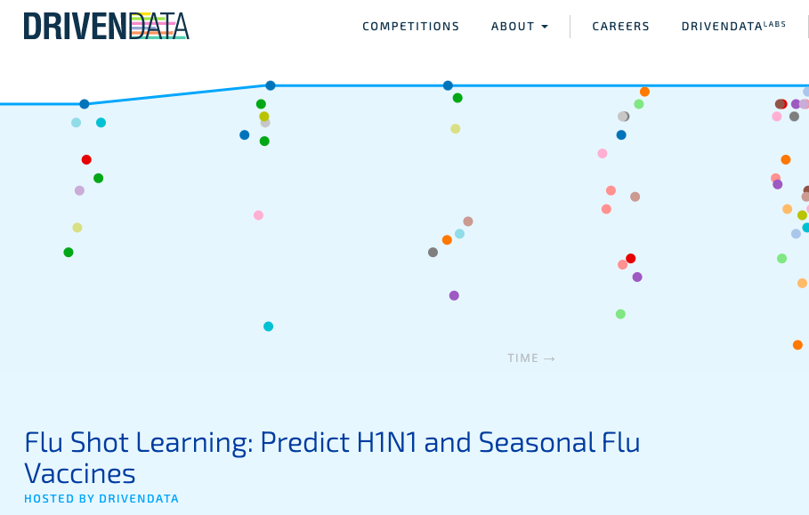
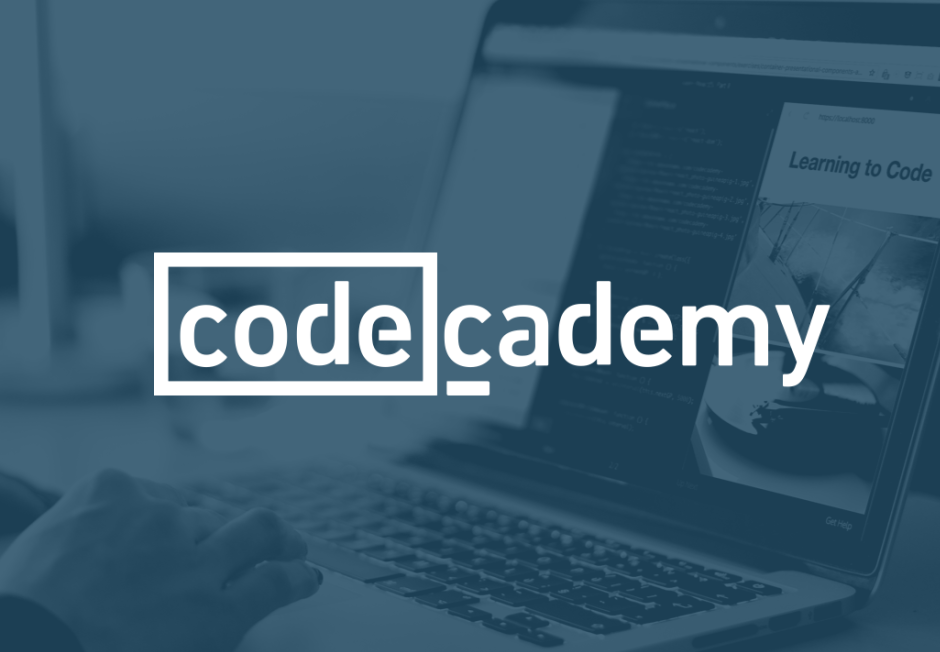
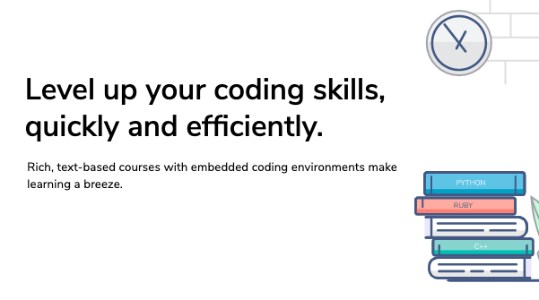

Mark Torres
About Me
Hi! My name is Mark Torres and I'm a senior at Yale University, studying Statistics & Data Science. Throughout college, I used statistical methods to better understand social behaviors. For example, my thesis (see here) used deep learning to understand the spread of information (and misinformation) on social media. I was also involved in additional work, studying, for example, how meditation promotes altruistic behavior (see here), how neural networks can be leveraged to identify fake Twitter users, and how AI can be used to understand flaws in people's attention span.
Resume
Attached is the most recent version of my resume:
-
Some more recent highlights of my resume include:
1. Data Science Researcher, Crockett Lab (Yale University): I've been working as a research assistant in the Crockett Lab at Yale University (see lab page here), where I help study how information (and misinformation) spreads in social networks.
2. Software Engineer, Groupwise: I've been working as a software engineer contrator at Groupwise, a small startup at Yale University that combines technology and social science to give actionable insights to users.
3. Data Science Intern, The D.E. Shaw Group: In the summer of 2019, I worked as a data science intern (as a member of the generalist intern program) at The D.E. Shaw Group, a global investment and technology group based in New York, New York. I was a part of the Human Capital Analytics and Reporting (HCAR) group, working on analyzing applicant and recruitment data and proposing methods to predict which applicants would be successful in certain stages of the application process. I also worked on standardizing an unstructured corpus of text data that could be used to improve the team's analyses. I used Python, SQl, and R to extract, wrangle, and analyze the data, and I presented the results using Tableau dashboards.
Current Independent Projects
At the moment, I'm working on the following projects and classes:
-
DrivenData

DrivenData is a platform that hosts data science competitions that are relevant for social impact (e.g., poverty, education, conservation, etc.)
I am currently working on a competition where the goal is to predict whether people got the H1N1 and seasonal flu vaccines, in 2009, based off information from the National 2009 H1N1 Flu Survey (NHFS). It was a one-time survey conducted in response to the 2009 H1N1 pandemic, in order to see how willing people were to take both the then-newly synthesized H1N1 vaccine and the seasonal flu vaccine.
Track my progress from my Github repo for this project. -
Codecademy

Codecademy is a platform that hosts many interactive tutorials for teaching people how to code. I am currently working on learning the basics of web development through their "Web Development Track".
I previously finished their 200-hour "Computer Science" track, in Python, which was a great introduction to both Python programming (it filled some gaps in my understanding of Python) as well as computer science (where I strengthened my understanding of concepts such as OOP, recursion, data structures, and algorithms).
In addition to these tracks, I also took courses on Codecademy to both learn the basics of Git and C++ and develop my skills in SQL. -
Educative

Educative is a platform that hosts a variety of software engineering and development classes.
On this platform, I'm currently working on the "Becoming a Machine Learning Engineer" track, which reviews a variety of deep learning architectures and details how they can be used to solve problems in prediction, image classification, text analysis, and other use cases.
Past Projects
Development in progress
Personal Interests
Development in progress